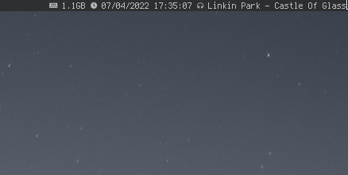
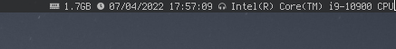
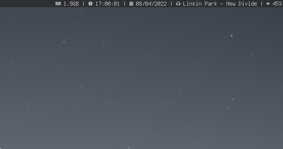
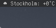
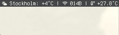

As of 0.1, xshbar no longer comes with any plugins. If you want these plugins you'll need to download these and put them in ~/.config/xshbar/plugins.use (Create folder if it doesn't exist) Do not forget to enable them in ~/.config/xshbar/xshbar and put the plugin in ~/.config/xshbar/plugins.use
This plugin allows you to test if your plugin system works properly.
This plugin provides many features that the date command provides.
This plugin provides RAM status.
This plugin allows you to display your current track and many more things.

NOTE: You must change $format and $folder to match your system before using.
This plugin allows you to display information about your processor such as current usage, brand, model, etc.

This plugin does one thing and one thing only: display your current volume.

This plugin displays general system information once its variables are defined in prn
This plugin displays weather information. Simple eh?

This plugin displays the value of BitCoin (BTC)

This plugin displays simple network stats
NOTE: You need to change the device name.
This plugin does one thing and one thing only; displays the amount of packages on your system.
This plugin displays "Recording" if you're recording with dfmpeg (ffmpeg + dmenu + dfmpeg)
NOTE: Requires a version of dfmpeg released 10/04/2022 or later.
This plugin displays your CPU temp. Simple.

NOTE: Requires lm-sensors
This plugin displays the newest rautafarmi message. Simple as that.
This plugin displays your current battery capacity.
This plugin displays your PulseAudio/Pipewire volume.